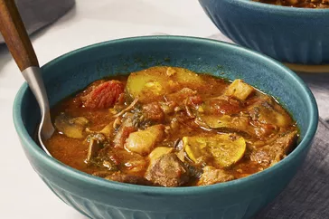

Pork Stew

Description
This is a stew recipe used with a pork meat and potatoes for it sweetness
Ingredients
- Water
- Sait
- Pork meat
- Potatoes
- spices
Steps
- Put water in the pot
- Add your pork meat and spices inside
- allow it to boil for some time
- put your potatoes and turn it
- tast to see what is missing
- remove after all are done cooking